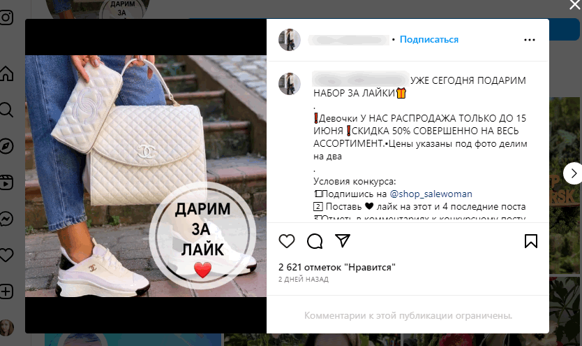
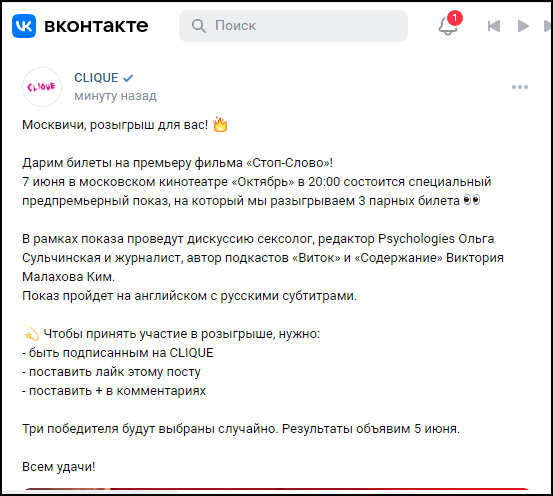
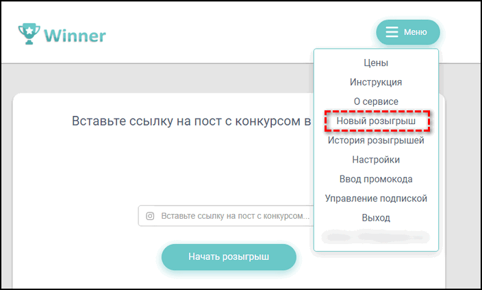
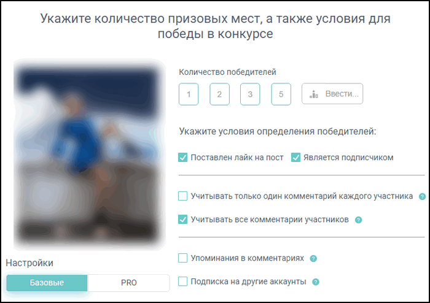

ТОП 20 идей для конкурсов в Инстаграм и ВК

Конкурсы в Инстаграме* – это способ увеличить охваты, получить активную аудиторию и найти соратников. Но прежде чем запускать, нужно проработать идеи для розыгрыша призов.
Как провести конкурс в социальной сети: Инстаграм* и ВК
Обычно, конкурсы проводят либо на старте, либо, когда сообщество/блог уже достигло нужного количества подписчиков. Это может быть:
- конкурс с определенными условиями. Творческое задание, фотография в определенном месте или короткое видео;
- событие, которое проводится в заведении, на площади, а социальные сети нужны только для оповещения и результатов;
- розыгрыш с генератором чисел, который определяет победителей.
Для проведения конкурса нужно:
- определить идею;
- выбрать возможное количество участников и победителей;
- подготовить способы оповещения аудитории о начале проведения конкурса, промежуточных результатах и об окончании;
- подобрать подарки.
Рассказать о вознаграждении нужно заранее, чтобы избежать негативных отзывов и критики со стороны участников. И в Инстаграме*, и в Вконтакте стоит регулярно публиковать «Истории»/ «Сюжеты» с информацией о конкурсе. Не лишними будут публикации, в которых организаторы расскажут о максимальном количестве мест, подарках, сроках проведения.
ТОП-10 идей для конкурсов в Инстаграме*
Идеи для розыгрыша в Инстаграм* должны быть простыми и легко выполнимыми. Если речь идет о привлечении подписчиков или «вознаграждении» постоянных участников.

- Поставить лайк и оставить комментарий
Стандартный вариант, как получить активность на странице. Призом может быть как реальная вещь, так и цифровой продукт. Чтобы выбрать победителя, используйте сервисы, позволяющие выгружать комментарии, например, LiveDune.
- Подписка на спонсоров + лайк + комментарий
В этом случае, приз должен быть серьезнее. Например, товар, который продает бренд, с эксклюзивным дизайном или наполнением.
- Сделать репост публикации в Ленту или Историю
Это может быть, как обычный репост записи, так и с добавлением своего оформления, фотографии и текста.
- Творческий конкурс
Участники должны проявить креатив в создании поста или видео. Например, записать смешной клип, отметив аккаунт, который проводит розыгрыш
- Для клиентов
Фото или видео с продуктом, который ранее клиент приобрел у этого бренда, магазина или у блогера. Популярный вариант – сделать обзор или распаковку только что полученного товара.
- Конкурс отзывов
То же, что и с конкурсом для клиентов: написать отклик на ранее приобретенный товар. Лучше, если покупатель оставит его под публикацией с розыгрышем или опубликует отдельно в своем профиле, оставив отметку на магазине.
- Упомянуть в комментариях максимальное количество своих друзей
Подсчет в этом случае сложнее, но владелец аккаунта получает не только активность, но и потенциальную аудиторию. И если участник отмечает своих друзей, значит он положительно настроен и сможет поделиться с близкими хорошими отзывами.
- С хештегом
Бренду или блогеру нужно придумать свой тег, чтобы участники добавляли его в свои публикации. Это могут быть тематические фото и видео, или же обычные посты, но не менее трех.
- Запустить свой тренд
С популярностью Reels этот раздел стал наиболее посещаемым. Поэтому компании и бренды могут взять на вооружение идею, с созданием собственного ролика с любой визуализацией: танец, подборка фотографий, рассказ на видео. Задача участника – повторить или создать уникальный клип по заданной теме.
- Игры
Участники должны дать правильный ответы в викторине. Устроить конкурс можно в Сторис, сделав подборку публикаций с соответствующим стикерам. По результатам и количеству ответов определить победителя.
ТОП-10 идей для конкурса в ВК
Вконтакте постепенно возвращается к статусу активной социальной сети, где появляются новые пользователи. Как и в Инстаграме*, в ВК есть короткие клипы, опросы для Сюжетов. Главное отличие – сообщества, с которыми могут взаимодействовать участники розыгрышей, а также оплачиваемая реклама для продвижения розыгрышей. В ВК меньше вероятность, что группу могут заблокировать за проведение конкурса.

Идеи для розыгрыша в ВК:- Сделать репост публикации и добавить в закладки
Подписчики должны разместить пост на своей странице, оставив первым в Ленте. Запись должна продержаться до одной недели, после чего участник может её удалить.
- Создать видео или публикацию с упоминанием сообщества
В ВК также есть упоминания, которые работают через раздел: «Создать публикацию» или с помощью символа «@». Сообщество получит уведомление, что было отмечено в записи.
- Отметить в комментариях друзей
Можно упоминать неограниченное число пользователей в одном отклике. Или же размещать каждый комментарий отдельно.
- Записать Сюжет и сохранить в «Избранном»
Запись должна находиться на странице участника до завершения конкурса. Организатор может посмотреть и узнать о созданном посте, если был использован стикер «Упоминание».
- Фотоконкурс с размещением своих фото в альбомах группы
Выбрать победителя могут сами организаторы или же другие пользователи. Для второго варианта нужно придумать систему оценивания. Например, «Оценки от 0 до 10» или по количеству лайков.
- Аудио-конкурс
Записать свою музыку и опубликовать в сообществе. Как и в случае с фотографиями, оценивать могут организаторы или другие подписчики. Для размещения музыки в ВК нужно разрешить прослушивание для всех и добавить трек в комментарии или предложенные записи группы.
- Истории или объемные отзывы
ВК позволяет размещать большие отзывы в формате статей. Участники конкурса должны написать отклик, в котором рассказывают почему им нравится продукция, описать свой предыдущий опыт сотрудничества и назвать причину, почему именно эта запись должны одержать победу.
- Опросы
В социальной сети можно создать опросы в виде публикаций. При размещении нужно запретить изменять результаты голосования. Кроме создания голосования через дополнительные функции, организатор может воспользоваться текстовым форматом.
- Конкурс лучшего комментария
Смешной, познавательный и даже злой отклик, который понравился другим подписчикам страницы. Оценивать качество по количеству лайков, добавленных на комментарий. Такой вариант подойдет как розыгрыш на 100 подписчиков.
- Ориентированный на активных покупателей
Конкурс для тех, кто часто оформлял заказы, оставлял комментарии и ставил лайки. Подключив виджет активности, организатор может отслеживать, кто из подписчиков проявлял наибольшую активность в сообществе.
Определяем победителя
Выбрав любой из предложенных форматов проведения конкурса, организатор должен определиться со способом определения победителей. Это может быть один участник или несколько: разделенные по местам от 1 до 10 с разными по характеристикам подарками или с одинаковым вознаграждением. Выбрать победителя можно самостоятельно, посмотрев весь список участников. Или передать это сервису GetWinner, который определит лучших с помощью генерации случайных чисел.

Функции сервиса:- выбрать победителя по комментариям, лайкам;
- фильтр по подпискам на аккаунты спонсоров;
- базовые и продвинутые настройки, с фильтром по упоминаниям;
- история ранее проведенных конкурсов;
- оформленная страница с отображением аватарки победителей.
Чтобы воспользоваться GetWinner, нужно создать личный кабинет на сайте и выбрать - «Новый розыгрыш»:
- Зайти на сайт – выбрать: «Новый розыгрыш».
- Добавить в пустое поле ссылку на публикацию в Инстаграме*.

- Указать параметры выбора победителей.
- Подождать, пока сервис сгенерирует лучших участников.
Если один из выбранных участников по каким-либо критериям не подходит – его можно заменить на странице с результатом.
50 идей подарков для победителей
Идеи подарков для розыгрышей помогут организаторам избежать проблем с вознаграждениями и нужны для выбора разных вариантов по числу победителей. Для магазинов:
- косметический набор. Новинки, которые еще не были анонсированы с сообществе;
- вкусный букет. Для магазинов, ресторанов и кафетериев;
- купон на покупки. С максимальной скидкой;
- тематический набор. Например, приуроченный к какому-либо празднику: свитер с оленями, пара носков с новогодней елкой;
- бесплатная доставка;
- сеты и наборы новых продуктов;
- эксклюзивная продукция. Например, футболки с рисунком, который подобрал победитель;
- приглашение на дегустацию. Подходит для магазинов и заведений;
- набор кухонной утвари, постельного белья или декоративных элементов;
- канцелярия и книги в одном стиле.
Сфера услуг (салоны красоты, специалисты, организаторы туристических поездок, спортзалы и фитнес-центры):
- сертификат на бесплатный день;
- сертификат на посещение с друзьями определенной процедуры;
- экскурсии с друзьями или близкими;
- день с экспертом. Бесплатная консультация, оказание услуг;
- спортивное питание и план тренировки от тренера;
- домашняя программа тренировок от фитнес-центра;
- бесплатный абонемент на месяц;
- чек-лист для путешественников со скидкой на поездку;
- сертификат на бесплатную студийную сьемку. Для фотографов и видеомонтажеров;
- купон на уникальную услугу. Например, массаж с нестандартной техникой.
Блогерам и экспертам в цифровой среде:
- бесплатное место на курсе;
- разбор профиля от SMM-специалиста;
- индивидуальные обучающие материалы;
- купон на бесплатные услуги, который можно подарить близкому человеку;
- реклама блога победителя;
- день с любимым блогером;
- подарочный бокс от блогера. Косметика, сладости, одежда;
- набор курсов и чек-листов;
- помощь в создании контента, эксклюзивные советы.
Интернет-издания и компании цифровых технологий:
- месяц с премиумом в приложении, программе;
- приглашение к сотрудничеству. Если конкурс был запущен для поиска новых сотрудников;
- эксклюзивная статья с победителем;
- публикация материалов в рамках творческого конкурса;
- консультация от специалиста, ответы на любые вопросы;
- создание уникального продукты под запросы победителя. Например, открыть доступ к приложению, которое только находится в разработке или разблокировать функцию, которая пока недоступна другим пользователям;
- экскурсия по офису компании;
- тренинг-урок по программированию, веб-дизайну.
Организаторам мероприятий и заведениям:
- бесплатный ужин для компании или пары;
- проходи в VIP-зону;
- билеты в кино, оперу;
- купон «на эмоции»: прыжок с парашютом, конная прогулка, квест-комнаты;
- участие в проведении мероприятия: победителю показывают, как готовятся к каждому заказу, проводят мастер-класс;
- урок кулинарии от шефа;
- купон на бесплатную организацию праздника.
Стандартные подарки:
- набор наливной парфюмерии;
- одежда с принтом и автографом;
- потрет-мозаика;
- сладкий подарок: домашняя выпечка, торт или набор сладостей из других стран;
- светильник-фотография с текстом любимой песни;
- деревянные аксессуары и декор для дома.
Порой подобрать подарок для победителей нелегко, но организаторы конкурсов должны опираться на тематику их сообщества, количество условий и их сложность.